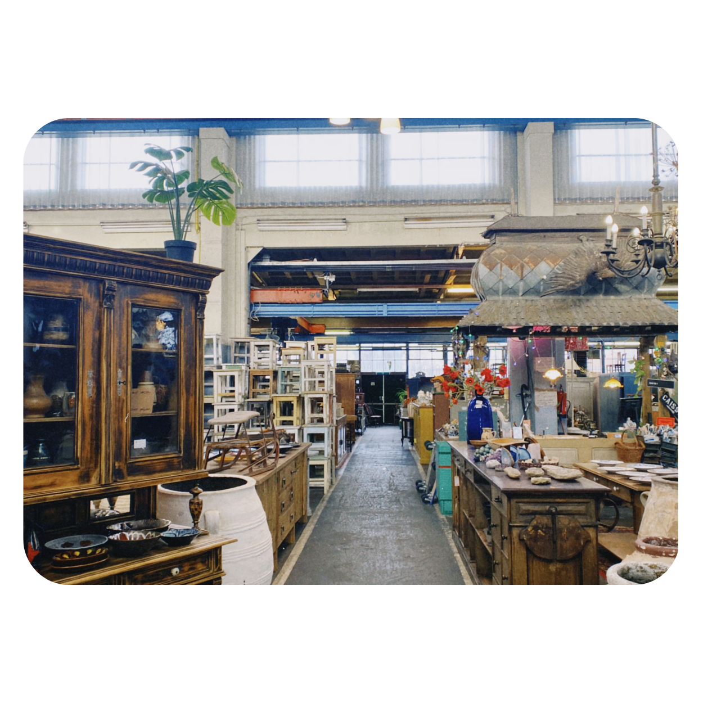

vin·tage (de; v(m))
Voorwerpen die door hun ouderwetse uitstraling modieus zijn.
Unieke Stijl
Vintage items, waaronder meubels, hebben vaak een unieke stijl die karakteristiek zijn voor een bepaalde periode.
Nostalgie
Vintage meubels kunnen nostalgische gevoelens oproepen en herinneringen oproepen aan een specifieke tijd. Sommige mensen vinden het leuk om stukken te hebben die een geschiedenis hebben en verbonden zijn met een bepaald tijdperk.
Duurzaamheid
Het kopen van vintage wordt vaak beschouwd als een duurzame keuze. Het hergebruiken van meubels en spullen draagt bij aan milieubewustzijn door de vraag naar nieuwe productie te verminderen en het hergebruik van bestaande items te bevorderen.
Investering
Sommige mensen beschouwen het kopen van vintage meubels als een investering. Als bepaalde stijlen of merken in waarde stijgen, kunnen vintage stukken na verloop van tijd meer waard worden.
Zelfexpressie
Het inrichten met vintage meubels biedt mensen de mogelijkheid om hun persoonlijke stijl uit te drukken en zich te onderscheiden van de standaard hedendaagse inrichting. Vintage stukken voegen een uniek en eigenzinnig element toe aan een ruimte.